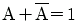
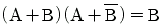
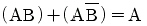
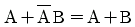
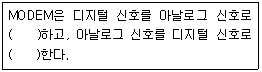
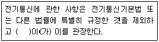
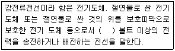
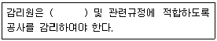

정보기기운용기능사 (2010-03-28 기출문제)
1과목: 전산 기초 이론
1. 16진수 27D를 10진수로 변환하면?
- 237
- 357
- 637
- 897
(정답률: 76%)

2. 클라이언트/서버 모델의 서버 부분에서 운영되는 자바 프로그램 컴포넌트들을 설정하기 위한 아키텍처는?
- COM/DCOM
- EAI
- JSP
- EJB
(정답률: 58%)
3. 입/출력 전송이 중앙처리장치의 레지스터를 경유하지 않고 수행되는 방법은?
- 인터리빙
- 디인터리빙
- 버퍼링
- DMA
(정답률: 62%)
4. 다음은 DRAM과 SRAM에 대한 비교이다. 옳지 않은 것은?
- DRAM-저속, SRAM-고속
- DRAM-고밀도, SRAM-저밀도
- DRAM-고용량, SRAM-저용량
- DRAM-비싸다, SRAM-저렴하다.
(정답률: 70%)
5. 다음 프로그래밍 언어 중 저급언어에 해당하는 것은?
- C++
- 기계어
- 자바
- 코볼
(정답률: 88%)
6. 입력 A, B가 서로 다른 경우에만 1의 출력을 갖는 Gate는?
- XNOR
- NOR
- XOR
- NAND
(정답률: 68%)
7. 세계 최초의 전자식 전자 계산기는?
- IBM
- UNIVAC
- ENIAC
- VAX
(정답률: 77%)
8. 클록펄스(Clock Pulse)에 의해 동작되는 순서논리회로가 아닌 것은?
- 전가산기 회로
- RS 플립플롭 회로
- JK 플립플롭 회로
- T 플립플롭 회로
(정답률: 72%)
9. 다음 불 대수식 중 결과가 A가 아닌 것은?
- A + A'
- A + A
- A + 0
- A · 1
(정답률: 73%)
10. 다음 불 대수식 중 틀린 것은?




(정답률: 58%)
2과목: 정보 기기 운용
11. 반도체 소자로서 기억된 내용을 읽어서 사용할 수는 있으나 임의로 기억시킬 수 없으며 전원이 꺼져도 기억된 내용이 지워지지 않는 것은?
- ROM
- BUS
- RAM
- USB 메모리
(정답률: 80%)
12. 바이러스 증식을 막는 방법이 아닌 것은?
- 감염된 파일의 바이러스를 제거시킨다.
- 실행파일의 확장자를 비실행 확장자로 바꾼다.
- 디스크의 파일을 검사한다.
- 프로그램을 실행시킬 때 checksum을 비교 한다.
(정답률: 67%)
13. 1[k Ω]을 [Ω]으로 나타내면?
- 103[Ω]
- 106[Ω]
- 109[Ω]
- 1012[Ω]
(정답률: 79%)
14. 팩시밀리(Facsimile)의 ITU-T에 의한 분류 중 G3일 경우 A4 용지 600자 기준시 전송 시간은?
- 30분 이내
- 10분 이내
- 1분 이내
- 5초 이내
(정답률: 74%)
15. 다음 ( )안에 들어갈 내용을 순서대로 옳게 나열한 것은?

- 변조, 복조
- 복조, 변조
- 변조, 변조
- 복조, 복조
(정답률: 81%)
16. 영상표시장치 중 네온관을 사용하여 가스 방전에 의한 발광빛을 이용하여 표시하는 장치는?
- LED
- CRT
- LCD
- PDP
(정답률: 74%)
17. 전기회로에서 "임의의 접속점에 유입되는 전류의 합은 유출 되는 전류의 합과 같다."라는 법칙은?
- 렌쯔의 법칙
- 플레밍의 법칙
- 패러데이의 법칙
- 키르히호프의 법칙
(정답률: 82%)
18. 옴의 법칙(ohm's law)에 대한 설명으로 틀린 것은?
- 도체의 저항은 전류에 비례한다.
- 도체에 흐르는 전류는 전압에 비례한다.
- 도체에 흐르는 전류는 저항에 반비례한다.
- 도체에 가한 전압은 전류와 저항에 비례한다.
(정답률: 56%)
19. 컴퓨터 프로그램의 확장자를 나열한 것 중 틀린 것은?
- COM, SYS, BAT
- TXT, EXE, HWP
- COM, DAT, BAT
- CLS, DIR, TYPE
(정답률: 66%)
20. 마이크로필름의 작성을 광학적으로 카메라에 촬영하지 않고 컴퓨터로 출력하는 것은?
- 광디스크
- 팩시밀리
- COM
- DVD
(정답률: 52%)
21. 컴퓨터관련 시설의 안전관리에 대한 설명 중 잘못된 것은?
- 컴퓨터실을 설치할 때는 전기, 급수, 난방 등의 건축 설비와 근접시켜야 한다.
- 접지는 사용시 최대투입전류와 차단시 최대전류를 고려해야 한다.
- 컴퓨터실의 온도 유지를 위해 항온항습기를 설치하는 것이 좋다.
- 전원안전장치는 과전류보호기, 자동전압조정기, 무정전 전원장치 등이 있다.
(정답률: 77%)
22. MS-DOS의 명령어 중 컴퓨터에서 사용하는 문장 파일(Text File)의 내용을 화면상에 확인하고자 할 때 사용하는 내부명령어는?
- BREAK
- SET
- TYPE
- FORMAT
(정답률: 66%)
23. 컴퓨터에서 편집하고 표현하기 위해 사진, 포스터, 잡지 및 그 외의 자료로부터 이미지를 읽어 들이는 장치는?
- 키보드
- 전자펜
- 마우스
- 스캐너
(정답률: 88%)
24. 전선의 길이를 2배로 늘리면 저항은 몇 배가 되는가?
- 1/2
- 2
- 4
- 8
(정답률: 58%)
25. 10[C]의 전기량이 두 점 사이을 이동하여 36[J]의 일을 하였다면 두 점 사이의 전위차는?
- 360[V]
- 86.4[V]
- 3.6[V]
- 0.28[V]
(정답률: 67%)
26. 다음 중 정보기기 관련 시설에 대한 화재 발생 시 사용할수 있는 소화기로 가장 적합한 것은?
- 스프링클러
- ABC 분말소화기
- 프레온 가스 소화기
- 이산화탄소 소화기
(정답률: 78%)
27. 저항 8[Ω]과 12[Ω]을 병렬 연결하였을 때 합성저항은?
- 4.8[Ω]
- 9.6[Ω]
- 12[Ω]
- 0.28[Ω]
(정답률: 69%)
28. 다음 중 전자가 이동되는 방향은?
- 음전기(-)에서 양전기(+) 쪽으로 이동
- 양전기(+)에서 음전기(-) 쪽으로 이동
- 양전기(+)와 음전기(-) 양방향으로 이동
- 어느 방향으로도 이동되지 않음
(정답률: 71%)
29. 오랜 시간 동안 컴퓨터 앞에서 작업을 하는 전문 직업인에게 발생하는 직업병으로 눈이나 어깨, 허리 통증을 유발하는 증후군을 무엇이라 하는가?
- CRT 증후군
- LCD 증후군
- PDP 증후군
- VDT 증후군
(정답률: 73%)
30. 해킹 예방 방법으로 옳지 않은 것은?
- 정체불명의 웹사이트에는 접근하지 않는다.
- 비밀번호를 정기적으로 교체한다.
- 보안 솔루션을 사용한다.
- 전화번호 등 알기 쉬운 비밀번호를 사용한다.
(정답률: 87%)
3과목: 정보 통신 일반
31. 다음 중 정마크 부호 방식에 해당되는 것은?
- 수직 패리티 부호방식
- 수평 패리티 부호방식
- CRC 부호방식
- 비쿼너리(Biquinary) 부호방식
(정답률: 69%)
32. 신호를 효율적으로 전송하기 위해서 높은 반송파 주파수로 변환시키는 과정은?
- 변조
- 정류
- 증폭
- 여파
(정답률: 63%)
33. 다음 중 LAN과 관련 없는 것은?
- DSU
- CSMA/CD
- TOKEN RING
- FDDI
(정답률: 42%)
34. 다음 중 비동기식 전송방식의 특징이 아닌 것은?
- 전송할 자료를 문자 단위가 아닌 블록 단위로 묶어 전송 하므로 속도가 빠르다.
- 스타트 비트와 스톱 비트가 있다.
- 주로 저속의 데이터 통신에 이용된다.
- 각 글자 사이에는 일정치 않은 시간의 휴지기간이 있을 수 있다.
(정답률: 60%)
35. 통신에서 전송품질의 중요한 척도가 되는 S/N 비를 바르게 설명한 것은?
- 원 신호에 대한 잡음의 상대적인 세기의 비율이다.
- 정상 전송속도에 대한 지연속도의 비율이다.
- 송신신호에 대한 수신신호 세기의 비율이다.
- 출력신호 파형의 일그러짐을 말한다.
(정답률: 56%)
36. ITU-T의 X 시리즈 권고안 중 공중데이터 네트워크에서 패킷형 터미널을 위한 DCE와 DTE 사이의 접속 규격은?
- X.3
- X.21
- X.25
- X.45
(정답률: 71%)
37. LAN의 계층모델에서 논리링크의 서브층과 매체액세스 제어서브층은 OSI 7계층 모델의 어느 계층에서 구분되는가?
- 표현계층
- 네트워크계층
- 물리계층
- 데이터링크계층
(정답률: 53%)
38. 다음 중 무선 전송로에 이용되지 않는 것은?
- 마이크로웨이브(micriwave)
- 위성 채널(satellite channels)
- 광섬유 케이블(optic cable)
- 도파관(wave guide)
(정답률: 69%)
39. 다음 전송매체 중 CATV 방송시스템에서 가입자 댁내 인입 전송설로에 가장 적합한 것은?
- 동축 케이블
- 쌍연 케이블
- 나선 케이블
- 폼스킨 케이블
(정답률: 86%)
40. 인터넷-폰(Internet-phone)에 대한 설명 중 틀린 것은?
- 인터넷망을 통해 음성전화가 가능하다.
- 아날로그 형태의 신호가 전송된다.
- 인터넷망은 디지털신호가 전송된다.
- 주요기술은 VoIP(Voice over Internet Protocol)이다.
(정답률: 75%)
41. 이더넷에 관한 설명으로 틀린 것은?
- 매체 접근 방식은 CDMA이다.
- IEEE 802.3 표준으로 속도에 따라 패스트 이더넷, 기가비트 이더넷 등이 있다.
- 신호전송 방식은 베이스 밴드 방식이다.
- 사용되는 케이블은 UTP, 동축 케이블 등이 있다.
(정답률: 44%)
42. 2개의 지점 사이에서 정보를 보내거나 받을 수는 있으나 동시에 정보를 주고 받을 수 없는 통신 방식은?
- Simplex
- Half Duplex
- Full Duplex
- High Duplex
(정답률: 74%)
43. 광섬유 케이블에 대한 특성이 아닌 것은?
- 누화의 영향을 받지 않는다.
- 감쇠가 적으며 장거리 전송이 가능하다.
- 광대역으로 다중화 및 대용량화가 가능하다.
- 유도성으로 외부의 전자유도에 영향을 준다.
(정답률: 68%)
44. RS-232C용 케이블 커넥터인 25핀에서 DTE와 DCE 간에 데이터의 송신과 수신용 핀 번호가 순서대로 옳은 것은?
- 2번, 3번
- 7번, 8번
- 14번, 16번
- 20번, 21번
(정답률: 82%)
45. 다음 중 LAN의 특징이 아닌 것은?
- 광대역 전송매체의 사용으로 고속통신이 가능하다.
- 광역 공중망의 통신에 적합하다.
- 정보처리기기의 재배치 및 확장성이 우수하다.
- 다양한 디지털 미디어 정보의 전송이 가능하다.
(정답률: 58%)
46. 전송선로의 길이와 무관한 것은?
- 인덕턴스
- 특성 임피던스
- 저항
- 정전용량
(정답률: 61%)
47. 4진 PSK변조 방식에서 동시에 전송할 수 있는 비트의 수는?
- 4개
- 3개
- 2개
- 1개
(정답률: 71%)
48. 다음 중 정보전달의 5단계를 순서대로 옳게 나열한 것은?
- 링크확립→링크절단→메시지전달→회로연결→회로절단
- 회로연결→링크확립→메시지전달→링크절단→회로절단
- 회로절단→링크절단→링크확립→회로연결→메시지전달
- 링크절단→메시지전달→링크확립→회로절단→회로연결
(정답률: 81%)
49. 패킷 교환방식에 대한 설명으로 틀린 것은?
- 메시지를 일정 단위의 크기로 분할하여 전송한다.
- 속도가 서로 다른 단말기 간의 데이터 교환이 가능하다.
- 교환기나 통신회선에서 장애가 발생한 경우 우회 경로를 선택할 수 있다.
- 패킷교환방식은 디지털 전송로보다 아날로그 전송로에 유리하다.
(정답률: 71%)
50. 다음 중 멀티미디어(Multimedia)의 특징이 아닌 것은?
- 하나의 시스템에서 둘 이상의 미디어를 동시에 사용한다.
- 파일의 용량이 크기 때문에 네트워크를 통하여 전송이 불가능하다.
- 정보에 대한 디지털 압축 및 복원 기술을 사용한다.
- 네트워크를 이용해 양방향 정보 교류가 가능하다.
(정답률: 79%)
4과목: 정보 통신 업무 규정
51. 전기통신사업의 경영 주체는?
- 통신이용자
- 전기통신사업자
- 방송통신위원회
- 한국정보진흥원
(정답률: 64%)
52. 다음 ( )에 들어갈 내용으로 가장 적합한 것은?

- 지식경제부장관
- 전파연구소장
- KT(한국통신)사장
- 방송통신위원회
(정답률: 83%)
53. 기술기준에 위반하여 설계를 실시한 자에 대한 벌칙은?
- 300만원 이하의 과태료
- 500만원 이하의 벌금
- 1년 이하의 징역 또는 1000만원 이하의 벌금
- 3년 이하의 징역 또는 2000만원 이하의 벌금
(정답률: 58%)
54. 정보통신공사업의 등록기준에 속하지 않는 것은?
- 기술능력
- 공사실적
- 사무실
- 자본금
(정답률: 73%)
55. 모든 이용자가 언제 어디서나 적정한 요금으로 제공 받을 수 있는 기본적인 전기통신역무로 정의 되는 것은?
- 전송 역무
- 보편적 업무
- 인터넷 업무
- 기본적 업무
(정답률: 72%)
56. 전기통신기본법의 제정 목적이 아닌 것은?
- 전기통신의 발전을 촉진함
- 공공복리의 증진에 이바지함
- 전기통신을 효율적으로 관리함
- 전기통신사업의 운영을 적정하게 함
(정답률: 47%)
57. 다음 ( )에 들어갈 내용으로 가장 적합한 것은?

- 220
- 300
- 600
- 750
(정답률: 77%)
58. 다음 ( )에 들어갈 내용으로 가장 적합한 것은?

- 표준규격
- 설계도서
- 기술수준
- 정보통신공사업법
(정답률: 64%)
59. 발주자는 누구에게 공사의 감리를 발주하여야 하는가?
- 용역업자
- 도급자
- 하도급자
- 정보통신공사업자
(정답률: 71%)
60. 통신보안의 1차적인 책임자는?
- 통신 이용자
- 통신문 기안자
- 해당기관의 장
- 해당기관의 보안담당관
(정답률: 71%)
1. 16진수 27D를 각 자리수별로 나눕니다.
- 2는 16^2의 자리수, 7은 16^1의 자리수, D는 16^0의 자리수입니다.
2. 각 자리수를 10진수로 변환합니다.
- 2는 2, 7은 7, D는 13입니다. (D는 16진수에서 13을 나타냅니다.)
3. 각 자리수를 16진수에서 10진수로 변환한 값과 해당 자리수의 16진수의 제곱값을 곱한 후 모두 더합니다.
- 2 x 16^2 + 7 x 16^1 + 13 x 16^0 = 512 + 112 + 13 = 637
따라서, 16진수 27D를 10진수로 변환하면 637이 됩니다.